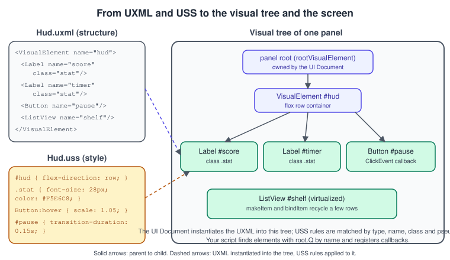
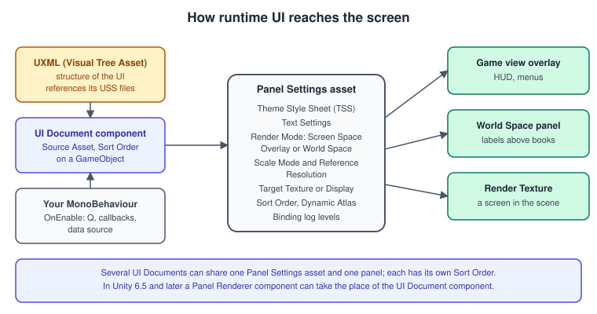
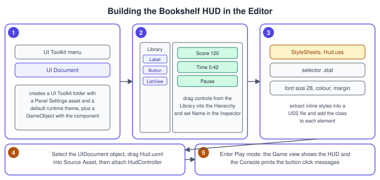
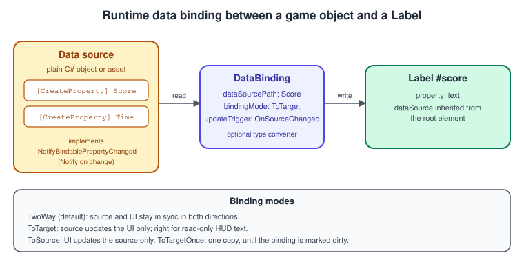
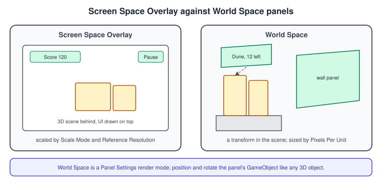

UI Toolkit
|
This content was generated with the assistance of AI and should be verified against the official documentation before being relied on in production. |
UI Toolkit is Unity’s retained-mode UI system, modelled on web technologies: the structure of a screen is a document (UXML), its look is a style sheet (USS), and its behaviour is C#. The same system builds Editor windows and in-game interfaces. In the Bookshelf it draws the heads-up display of the "Shelve-it" game (score, timer, a list of books still to shelve), the pause menu and a label that floats over a book.
The facts were checked in November 2026 against the Unity 6.3 LTS manual (6000.3). Features that arrived later are marked: the Panel Renderer component (6.5), the Advanced Text Generator as default text system (6.5), the backdrop-filter and drop-shadow filters (6.6), and the UI Toolkit Profiler modules (6.6). The code uses the UnityEngine.UIElements namespace, targets any Unity 6 project (URP 3D template, Input System) and runs on every platform Unity builds for. The editor-side use of UI Toolkit (custom inspectors and windows) is on the Editor Scripting and Tooling page; the older GameObject-based alternative is on the uGUI and TextMeshPro page.
UI Toolkit or uGUI?
Unity has three UI systems: UI Toolkit, uGUI (the Canvas-based Unity UI package) and IMGUI (the code-driven OnGUI system). Unity’s own comparison page, which carries the same recommendation in the 6.3 and 6.6 manuals, lists uGUI as the recommended system for runtime UI with UI Toolkit as the alternative, and UI Toolkit as the recommended system for Editor UI with IMGUI as the alternative. It describes UI Toolkit as a good runtime choice for:
-
a screen-overlay UI that runs on a wide variety of resolutions,
-
projects with a significant amount of UI,
-
teams where artists and designers want familiar, document-based authoring (UI Builder),
-
textureless rendering, UI positioned and lit in a 3D world, and custom shaders and materials.
| Runtime feature (Unity 6.3) | UI Toolkit | uGUI |
|---|---|---|
WYSIWYG authoring, nested reusable components |
yes |
yes |
In-scene authoring, serialized events, Animation Clip and Timeline integration |
no |
yes |
Data binding, UI transition animations, global style sheets |
yes |
no |
Textureless elements, advanced flexible layout, dynamic texture atlas |
yes |
no |
Right-to-left text and emoji, SVG, UI anti-aliasing |
yes |
no |
World-space UI, custom shaders (UI Shader Graph), rich text, Input System support |
yes |
yes |
A rule that follows from the table: use UI Toolkit for menus, HUDs, inventories and anything list-heavy or data-driven; use uGUI when the UI must be authored in the scene, animated with clips or Timeline, or reference scene objects directly. The two can coexist in one project, with an EventSystem component in the scene routing input to both.
The visual tree, UXML, USS and the panel

A UI Toolkit interface is a tree of visual elements. Every element derives from VisualElement; controls such as Label, Button, Toggle, TextField, Slider, ScrollView and ListView are elements with extra behaviour. The tree is held by a panel. Three kinds of asset describe it:
-
UXML (Unity Extensible Markup Language) files describe structure: which elements exist, their names, classes and attributes, and which templates and style sheets they use. UXML can be authored in UI Builder or by hand, and an element tree can be created from C# instead.
-
USS (Unity Style Sheet) files describe appearance. The syntax is CSS-like, with Unity-specific properties prefixed
-unity-(for example-unity-font-style). Selectors match elements by type, name (#hud), class (.stat) and pseudo-class (:hover,:focus,:active,:disabled). -
TSS (Theme Style Sheet) files collect USS files and are assigned to a panel as its default theme.
The layout engine is flexbox-based: elements are laid out in rows or columns with flex-direction, justify-content, align-items, flex-grow, margins and padding, and sized in pixels or percentages. By default every element is position: relative inside its parent; absolute positioning is available but should be the exception.
Source: Unity Manual: UI Toolkit
Panel Settings and the UI Document

Two things connect a UXML file to a running game:
-
A Panel Settings asset defines the panel. Its main properties are Theme Style Sheet, Text Settings, Render Mode (Screen Space Overlay or World Space), Target Texture or Target Display, Sort Order (panels with higher values draw on top), Scale Mode, Dynamic Atlas Settings and Binding Console Logs.
-
A UI Document component on a GameObject references the UXML in its Source Asset field and a Panel Settings asset. Several UI Documents can share a panel. Unity loads the UXML and builds the visual tree when the component is enabled (
OnEnable), andUIDocument.rootVisualElementis the root.
The Scale Mode decides how the panel reacts to resolution: Constant Pixel Size (with a scale factor), Constant Physical Size (using the screen DPI, with reference and fallback DPI values) or Scale With Screen Size (a Reference Resolution and a Screen Match Mode: match width or height, expand or shrink). For a HUD that must look right from a phone to a 4K monitor, use Scale With Screen Size with a 1920 by 1080 reference and match height.
In Unity 6.5 the Panel Renderer component was added to replace the UI Document component for adding UI Toolkit content to a scene. The UI Document continues to work and can be kept in existing projects; Panel Renderer offers the same functions with more features and better world-space compatibility, and the manual has migration steps. It appears in the new Hierarchy window and lets you reference runtime elements from the Inspector. On a 6.3 LTS project you use UI Document.
Building the Bookshelf HUD
In the Editor
-
In the main menu, under GameObject, choose UI Toolkit > UI Document. Unity creates a UI Toolkit folder with a Panel Settings asset and a default runtime theme, and a GameObject with a UI Document component already connected to the Panel Settings.
-
In the Project window create
Assets/UI/Hud.uxmland double-click it to open UI Builder. Drag Label, Button and ListView from the Library into the Hierarchy and set each element’s Name in the Inspector:score,timer,pause,shelf. -
Create
Assets/UI/Hud.uss, add it under StyleSheets in UI Builder, and give the labels the classstat. Moving inline styles into a USS file is the workflow the manual suggests. -
Select the UIDocument GameObject and drag
Hud.uxmlinto Source Asset. -
Set the Panel Settings Scale Mode to Scale With Screen Size with a reference resolution of 1920 by 1080.
-
Add the
HudControllerscript below to the UIDocument GameObject and enter Play mode.

The UXML
<ui:UXML xmlns:ui="UnityEngine.UIElements">
<Style src="Hud.uss" />
<ui:VisualElement name="hud" class="hud">
<ui:VisualElement class="hud-top">
<ui:Label name="score" class="stat" text="Score 0" />
<ui:Label name="timer" class="stat" text="0:00" />
<ui:Button name="pause" class="pause-button" text="Pause" />
</ui:VisualElement>
<ui:ListView name="shelf" class="shelf" fixed-item-height="36" selection-type="Single" />
</ui:VisualElement>
</ui:UXML>The src attribute with a relative path is the recommended way to reference another file; absolute paths start with a slash from the Assets folder or with project://database/. The older path attribute only loads from Resources folders and is not recommended.
The USS
:root {
--paper: rgb(245, 230, 200);
--ink: rgb(40, 30, 20);
--accent: rgb(180, 83, 9);
}
.hud {
flex-grow: 1;
padding: 24px;
}
.hud-top {
flex-direction: row;
justify-content: space-between;
align-items: center;
}
.stat {
font-size: 32px;
color: var(--paper);
-unity-font-style: bold;
}
.pause-button {
background-color: var(--accent);
color: var(--paper);
border-radius: 8px;
padding: 8px 20px;
transition-property: scale, background-color;
transition-duration: 0.15s;
}
.pause-button:hover {
scale: 1.06 1.06;
background-color: rgb(217, 119, 6);
}
.shelf {
margin-top: 16px;
max-width: 320px;
background-color: rgba(40, 30, 20, 0.6);
border-radius: 8px;
}USS variables (custom properties) are defined in :root or on any rule and read with var(--name), which gives the whole interface a theme in one place. A transition runs when a style value changes and a duration is set, for example when a pseudo-class like :hover applies; the manual notes that the first frame of a scene has no previous state, so a transition cannot start on that frame.
Source: Unity Manual: USS transition
The controller
using System;
using System.Collections.Generic;
using UnityEngine;
using UnityEngine.UIElements;
namespace Bookshelf.UI
{
/// <summary>Drives the Shelve-it HUD built in Hud.uxml.</summary>
[RequireComponent(typeof(UIDocument))]
public sealed class HudController : MonoBehaviour
{
[SerializeField] private List<string> booksToShelve = new()
{
"Dune", "Emma", "Ulysses", "Walden"
};
public event Action PausePressed;
public event Action<string> BookSelected;
private Label _score;
private Label _timer;
private Button _pause;
private ListView _shelf;
private int _shownSeconds = -1;
// The visual tree is built when the UIDocument is enabled, so wire the controls in OnEnable.
private void OnEnable()
{
VisualElement root = GetComponent<UIDocument>().rootVisualElement;
_score = root.Q<Label>("score");
_timer = root.Q<Label>("timer");
_pause = root.Q<Button>("pause");
_shelf = root.Q<ListView>("shelf");
_pause.clicked += OnPauseClicked;
// ListView creates only the rows it needs and recycles them as you scroll.
_shelf.makeItem = () => new Label();
_shelf.bindItem = (element, index) => ((Label)element).text = booksToShelve[index];
_shelf.itemsSource = booksToShelve;
_shelf.selectionChanged += OnSelectionChanged;
}
private void OnDisable()
{
if (_pause != null)
{
_pause.clicked -= OnPauseClicked;
}
if (_shelf != null)
{
_shelf.selectionChanged -= OnSelectionChanged;
}
}
public void SetScore(int value) => _score.text = "Score " + value;
public void SetTimeLeft(float seconds)
{
int whole = Mathf.CeilToInt(Mathf.Max(0f, seconds));
if (whole == _shownSeconds)
{
return; // avoid building a new string and dirtying the layout every frame
}
_shownSeconds = whole;
_timer.text = $"{whole / 60}:{whole % 60:00}";
}
public void RemoveBook(string title)
{
booksToShelve.Remove(title);
_shelf.RefreshItems(); // rebind visible rows after the source list changes
}
private void OnPauseClicked() => PausePressed?.Invoke();
private void OnSelectionChanged(IEnumerable<object> selected)
{
foreach (object item in selected)
{
BookSelected?.Invoke((string)item);
}
}
}
}Q<T>(name) is a UQuery call: a search through the subtree for the first element of type T with that name. Do it once in OnEnable and keep the references; querying every frame costs a tree walk.
Events
UI Toolkit’s event system mirrors the DOM: events are dispatched to a target element, travel through a trickle-down phase from the root and then a bubble-up phase back, and handlers are attached with RegisterCallback<TEvent>. The event names will be familiar from HTML: ClickEvent, PointerDownEvent, PointerMoveEvent, PointerUpEvent, WheelEvent, KeyDownEvent, FocusInEvent, ChangeEvent<T> (raised by fields when value changes), and the navigation events NavigationMoveEvent, NavigationSubmitEvent and NavigationCancelEvent. Button.clicked is a convenient shortcut for a click, and Toggle, Slider and TextField expose RegisterValueChangedCallback. A manipulator (for example a Clickable or a drag manipulator) packages several callbacks into a reusable behaviour, and pointer capture (the element’s CapturePointer method) makes sure an element keeps receiving the pointer during a drag.
using UnityEngine;
using UnityEngine.UIElements;
namespace Bookshelf.UI
{
/// <summary>Volume slider and a mute toggle wired with value-change callbacks.</summary>
[RequireComponent(typeof(UIDocument))]
public sealed class SettingsPanel : MonoBehaviour
{
private VisualElement _root;
private Slider _volume;
private Toggle _mute;
private void OnEnable()
{
_root = GetComponent<UIDocument>().rootVisualElement;
_volume = _root.Q<Slider>("volume");
_mute = _root.Q<Toggle>("mute");
_volume.RegisterValueChangedCallback(OnVolume);
_mute.RegisterValueChangedCallback(OnMute);
// Pointer events: highlight the panel while the pointer is over it.
_root.RegisterCallback<PointerEnterEvent>(OnPointerEnter);
_root.RegisterCallback<PointerLeaveEvent>(OnPointerLeave);
}
private void OnDisable()
{
_volume?.UnregisterValueChangedCallback(OnVolume);
_mute?.UnregisterValueChangedCallback(OnMute);
_root?.UnregisterCallback<PointerEnterEvent>(OnPointerEnter);
_root?.UnregisterCallback<PointerLeaveEvent>(OnPointerLeave);
}
private void OnPointerEnter(PointerEnterEvent evt) => _root.AddToClassList("is-hovered");
private void OnPointerLeave(PointerLeaveEvent evt) => _root.RemoveFromClassList("is-hovered");
private void OnVolume(ChangeEvent<float> evt) => Debug.Log("Volume " + evt.newValue);
private void OnMute(ChangeEvent<bool> evt) => Debug.Log("Muted " + evt.newValue);
}
}Input
When you enter Play mode UI Toolkit creates a default event system that is not part of any scene and works with both the legacy Input Manager and the Input System package: it detects the active input handling (the Active Input Handling setting in Player settings). With the Input System active, the navigation, pointer, click and scroll events are derived from the UI actions defined in the project-wide actions asset (Edit > Project Settings > Input System Package), for example UI/Point and UI/Click. If your scene also has a uGUI Canvas, add an EventSystem component so both UIs share it. The Input System’s own page is Input System.
Runtime data binding
Event handlers that copy values into labels are the boring half of UI code. Runtime data binding removes it: a binding links a property of a plain C# object (the data source) to a property of an element, and the binding system keeps them in sync. It works in the runtime and in the Editor UI for non-serialized data.

The rules, from the manual:
-
A property is bindable only if it is marked with
[CreateProperty](namespaceUnity.Properties). -
The element’s
dataSourceproperty points at the object; child elements inherit it.dataSourcePathis relative to the data source. -
The binding mode is
TwoWay(the default),ToTarget,ToSourceorToTargetOnce. UseToTargetfor read-only HUD text. -
The update trigger is every frame, on change detection (with a fallback to every frame when change cannot be detected), or when the binding is marked dirty. By default a binding is skipped when its data source version has not changed.
-
To give the system precise change information, implement
INotifyBindablePropertyChanged(per-property notifications) and optionallyIDataSourceViewHashProvider(a view hash that also allows buffering). Without notifications the system relies on the fallback. -
A struct used as a data source is boxed when assigned to
dataSource; prefer classes.
using System;
using System.Runtime.CompilerServices;
using Unity.Properties;
using UnityEngine;
using UnityEngine.UIElements;
namespace Bookshelf.UI
{
/// <summary>The numbers the HUD shows, observable by the binding system.</summary>
public sealed class GameStats : INotifyBindablePropertyChanged
{
public event EventHandler<BindablePropertyChangedEventArgs> propertyChanged;
private int _score;
private float _timeLeft = 90f;
[CreateProperty]
public int Score
{
get => _score;
set
{
if (_score == value)
{
return;
}
_score = value;
Notify();
Notify(nameof(ScoreText)); // the derived property changed too
}
}
[CreateProperty]
public float TimeLeft
{
get => _timeLeft;
set
{
if (Mathf.Approximately(_timeLeft, value))
{
return;
}
_timeLeft = value;
Notify();
Notify(nameof(TimeText));
}
}
[CreateProperty] public string ScoreText => "Score " + _score;
[CreateProperty]
public string TimeText
{
get
{
int whole = Mathf.CeilToInt(Mathf.Max(0f, _timeLeft));
return $"{whole / 60}:{whole % 60:00}";
}
}
private void Notify([CallerMemberName] string property = "")
{
propertyChanged?.Invoke(this, new BindablePropertyChangedEventArgs(property));
}
}
}The binder script attaches the data source and the bindings:
using Unity.Properties;
using UnityEngine;
using UnityEngine.UIElements;
namespace Bookshelf.UI
{
[RequireComponent(typeof(UIDocument))]
public sealed class HudBinder : MonoBehaviour
{
public GameStats Stats { get; } = new GameStats();
private void OnEnable()
{
VisualElement root = GetComponent<UIDocument>().rootVisualElement;
// Child elements inherit the data source from the root.
root.dataSource = Stats;
Bind(root.Q<Label>("score"), nameof(GameStats.ScoreText));
Bind(root.Q<Label>("timer"), nameof(GameStats.TimeText));
}
private static void Bind(Label label, string path)
{
label.SetBinding("text", new DataBinding
{
dataSourcePath = new PropertyPath(path),
bindingMode = BindingMode.ToTarget // the HUD never writes back
});
}
private void Update()
{
// Game logic changes the model; the labels update through the bindings.
Stats.TimeLeft -= Time.deltaTime;
}
}
}The same binding can be authored in UI Builder (select the element, set its Data Source and Data Source Path in the Bindings section of the Inspector, then right-click the Text property and choose Add binding) and is stored in UXML as a <Bindings> child with <ui:DataBinding property="text" binding-mode="ToTarget" />, plus data-source-path on the element. Type converters handle mismatches such as float to string, and Binding Console Logs in Panel Settings controls diagnostics.
Effects: transitions, filters and shaders
-
Transitions animate style changes (
transition-property,transition-duration,transition-timing-function,transition-delay, and thetransitionshorthand). They suit hover, focus and state changes; they are not a general animation system, so keyframed animation still belongs to uGUI with Animation Clips or Timeline, or to scriptedschedulecallbacks. -
USS filters (Unity 6.3) apply per-element post-processing to the element and its subtree through the
filterproperty:blur(<length>),grayscale,invert,opacity,sepia,tint(<color>)(a Unity addition),hue-rotateandcontrast, combined with spaces, and custom filter functions built on materials. A filter renders the subtree to a texture, so use it with care. -
UI Shader Graph (6.3) builds custom shaders for UI elements in Shader Graph on URP. Unity 6.6 adds programmable vertices to it.
-
In Unity 6.6,
backdrop-filterapplies blur, tint and similar effects to what is rendered behind an element (frosted-glass panels), and thedrop-shadowfilter function was added. -
SVG is a core feature in 6.3: import SVG assets as vector images without a separate package. (SVG sprites and uGUI support still need the Vector Graphics package.)
-
Masking and the
aspect-ratioUSS property (6.3) round out the layout and visual tools.
/* Grey out a book that has already been shelved; works in Unity 6.3 and later. */
.book-shelved {
filter: grayscale(100%) opacity(0.6);
transition-property: opacity;
transition-duration: 0.3s;
}
/* Frosted pause overlay: backdrop-filter requires Unity 6.6. */
.pause-overlay {
backdrop-filter: blur(8px) tint(rgba(255, 255, 255, 0.2));
background-color: rgba(255, 255, 255, 0.08);
border-radius: 12px;
}World-space UI
A panel whose Render Mode is World Space is placed in the scene like any other object, so the Bookshelf can float a title tag over a book, show a price on a wall panel, or put a screen on an in-game monitor.

-
Create a Panel Settings asset (Assets > Create > UI Toolkit > Panel Settings) dedicated to world-space panels and set its Render Mode to World Space.
-
Set Pixels Per Unit: the number of panel pixels that fit into one world unit. The default is 100, so a 200 by 60 pixel tag is 2 by 0.6 units.
-
Put a UI Document on a GameObject (a child of the book) with
BookTag.uxmlas its Source Asset and the world-space Panel Settings. In World-Space Dimensions, choose Size Mode Dynamic when the content defines its size or Fixed to set it, then pick the Pivot and Pivot Reference Size. -
Add a Panel Input Configuration component if the tag must receive pointer input (from the Hierarchy, + > UI Toolkit > Panel Input Configuration, or the button shown in the Panel Settings Inspector).
-
Move and rotate the GameObject with the normal Transform tools. For world-space panels, UI Documents closer to the camera draw in front; 2D sorting layers are not supported.
using UnityEngine;
using UnityEngine.UIElements;
namespace Bookshelf.UI
{
/// <summary>A floating title above a book that turns to face the camera.</summary>
[RequireComponent(typeof(UIDocument))]
public sealed class BookTag : MonoBehaviour
{
[SerializeField] private string title = "Dune";
[SerializeField] private Vector3 offset = new Vector3(0f, 0.35f, 0f);
private Transform _book;
private Camera _camera;
private void Awake()
{
_book = transform.parent;
_camera = Camera.main;
}
private void OnEnable()
{
VisualElement root = GetComponent<UIDocument>().rootVisualElement;
root.Q<Label>("title").text = title;
}
private void LateUpdate()
{
if (_camera == null)
{
return;
}
transform.position = _book.position + offset;
// Face the camera: the panel's front looks along the camera's forward direction.
transform.rotation = Quaternion.LookRotation(transform.position - _camera.transform.position);
}
}
}Performance
-
Do not dirty the layout every frame. Changing
top,left,width,heightorflextriggers layout recalculation that can cascade. To move an element, usestyle.translate, which acts at the transform stage. -
Use usage hints. Set
usageHintson elements that move or change colour often:DynamicTransformpushes transform updates to the GPU without regenerating the mesh, andGroupTransform,MaskContainerandDynamicColorcover grouped transforms, masks and colour changes. In UXML:usage-hints="DynamicTransform". -
Virtualize long lists.
ListViewcreates only enough rows to fill the viewport and recycles them throughmakeItemandbindItem; usefixedItemHeight(fixed height virtualization) when rows have equal height, which is cheaper than dynamic height. -
Avoid per-frame binding updates. Setting a binding’s
updateTriggerto every frame re-evaluates it each frame. Prefer change notifications. -
Mind the dynamic atlas and batching. Textures used by many elements are packed into a dynamic atlas (min, max and sub-texture sizes are configurable in Panel Settings); a texture that does not fit breaks batching. Avoid mesh tessellation on low-end platforms.
-
Filters render to textures. Apply them to small subtrees.
-
Text. The Advanced Text Generator (ATG) became the default text system for UI Toolkit in Unity 6.5, with Unity reporting CPU improvements of 10 to 40 percent depending on the benchmark.
-
Measure. Use the UI Toolkit Debugger, the profiler markers and, from Unity 6.6, the UI Toolkit and UI Toolkit Details Profiler modules (layout and binding time, events dispatched per panel, reasons for batch breaks). General method: Profiling and Optimization.
Testing and debugging
The UI Toolkit Debugger inspects the live visual tree and the styles applied to any element, the Event Debugger traces events, and live reload shows UXML and USS edits immediately. The UI Test Framework package (new in Unity 6.3) provides automated tests that simulate mouse clicks and movement, keyboard input and scrolling, with faster state management and better reporting. See Testing and CI for the surrounding test setup.
Source: Unity Manual: Test UI
Source: UI Test Framework package manual
Common mistakes
-
Reading
rootVisualElementinAwake. The tree is loaded when the UI Document is enabled; query controls inOnEnable, and re-wire them there because disabling and re-enabling the component rebuilds the tree. -
Forgetting to unregister callbacks. The visual tree is rebuilt on re-enable; unsubscribe in
OnDisableto avoid duplicate handlers. -
Styling by type selector for everything.
Label { ... }hits every label including those inside built-in controls. Use classes. -
Binding to a field. Only properties marked
[CreateProperty]are bindable; a public field is not. -
Skipping change notifications. With
INotifyBindablePropertyChanged, a property that changes without callingNotifyis not updated in the UI. -
Absolute positioning and pixel sizes everywhere. The layout engine and the panel scale mode handle most resolution problems; reserve absolute positioning for overlays.
-
Expecting uGUI features. UI Toolkit has no in-scene authoring, no serialized UnityEvents and no Animation Clip integration (see the comparison table).
-
OnGUIfor runtime HUDs. IMGUI is a legacy, code-driven system that Unity does not recommend for runtime UI. -
Forgetting an EventSystem when mixing with uGUI. UI Toolkit works without one, but a uGUI Canvas needs it, and both then share it.
What changed recently
| When | What |
|---|---|
Unity 6.0 (October 2024) |
runtime data binding is available (the manual marks it as 6000.0 and later) |
Unity 6.3 LTS |
USS filters; SVG as a core module; UI Shader Graph; the |
Unity 6.4 |
a default Editor and runtime UI preview theme in Project Settings; drag and drop of UXML and USS into UI Builder |
Unity 6.5 |
Panel Renderer component, which can replace UI Document; Advanced Text Generator becomes the default text system; mesh management improvements that speed up Web builds; the experimental USS Stats Profiler |
Unity 6.6 (September 2026) |
|
Where the books are outdated
| Book | What it teaches | Current practice |
|---|---|---|
UIA ch. 3 and 7 |
runtime HUDs drawn from |
|
GDP ch. 4 to 7 |
UI patterns such as the Observer and event-driven updates, wired to uGUI components or |
the patterns still apply; the observer is now partly built in as runtime data binding and as UI Toolkit events ( |
Both books |
UI Toolkit is absent: no UXML, USS, UI Builder, data binding or world-space panels |
this page; see also the uGUI page for the Canvas-based approach the books use |
See also
-
uGUI and TextMeshPro: the Canvas-based alternative.
-
Input System: the actions that drive UI navigation.
-
Audio: sliders for the mixer.
-
Editor Scripting and Tooling: UI Toolkit in the Editor.
-
ScriptableObjects and Data-Driven Design: data sources for bindings.
-
Project Architecture and Design Patterns: event channels that feed the HUD.
-
Profiling and Optimization: measuring UI cost.
-
C# Scripting and the MonoBehaviour Lifecycle: why wiring happens in
OnEnable. -
Scene Graphs and Asset Formats: retained trees in general.